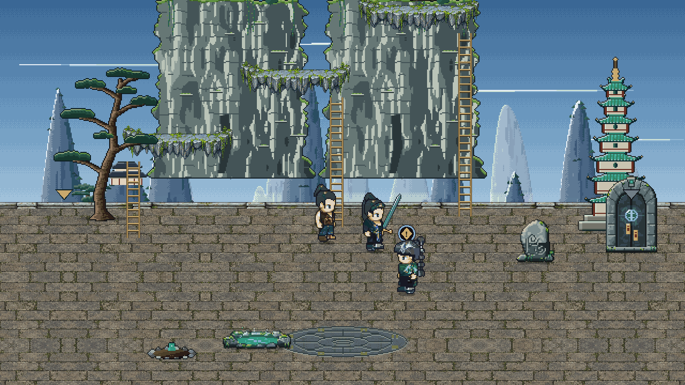
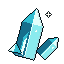
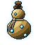
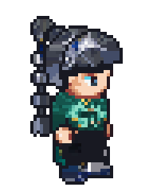

Tester
Qi Unfurling 4 · Lv 22
HP
QI

Tie Niu
Elder Hu's Peak
✓
1
A gift for Elder Hu
one a day
Loves not yet known Likes Manual Page
2Likes it
5

10
3+4
Give
They've had a gift from you today. Come back tomorrow.

Elder Hu
Jade Sect elder
Elder Hu likes it.
He turns the page to the light and reads a line of it twice.
+40
1About the Drowned Abbot
2Farewell